Здесь вы найдете моменты из карьеры Эминема — концерты, обложки альбомов и кадры из клипов.
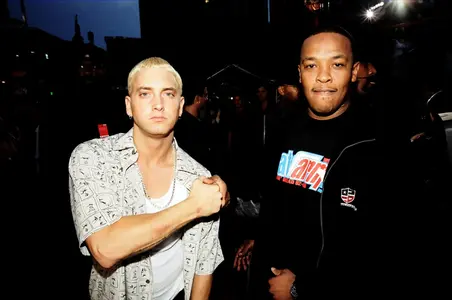
Эминем и Dr. Dre на вечеринке MTV Music Awards 1999 в Линкольн-центре в Нью-Йорке
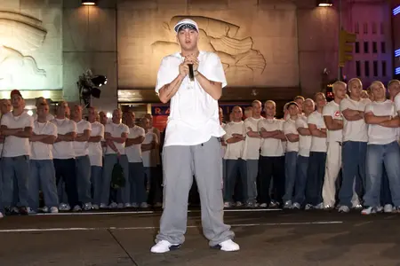
Эминем готовится к выступлению на церемонии вручения наград MTV Video Music Awards 2000 в Radio City Music Hall в Нью-Йорке 6 сентября 2000 года
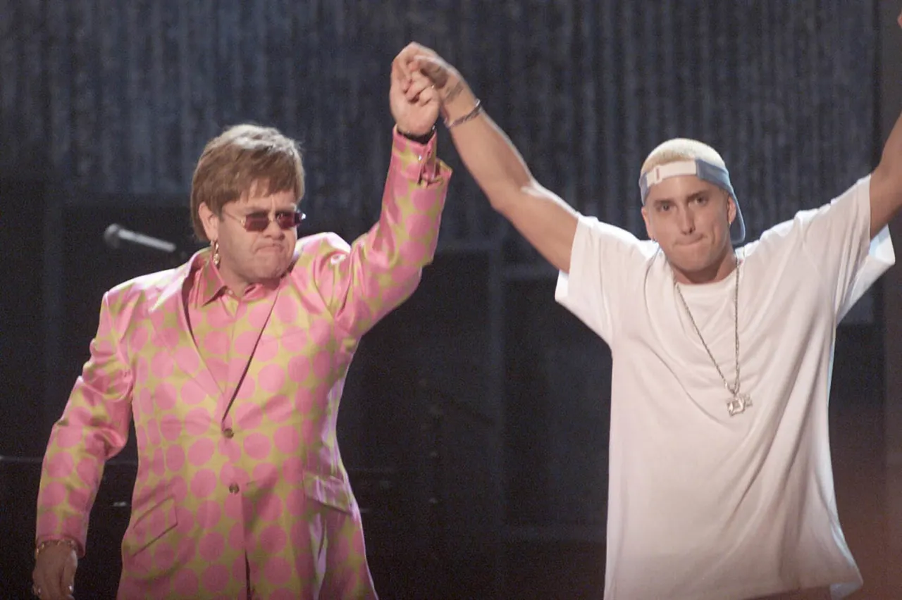
Эминем и сэр Элтон Джон выступают на сцене во время 43-й ежегодной церемонии вручения премии «Грэмми» 27 января 2001 года в Лос-Анджелесе
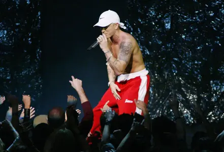
Эминем выступает на церемонии вручения наград MTV Video Music Awards в 2002 году
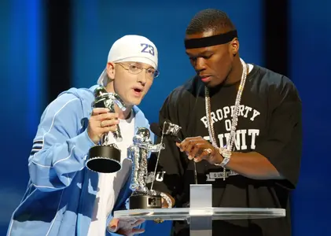
Эминем и 50 Cent получают награду за лучшее рэп-видео за клип последнего «In da Club» на церемонии вручения наград MTV Video Music Awards в 2003 году
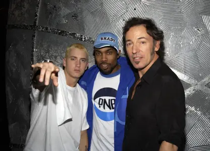
Эминем и Proof с Брюсом Спрингстином в 2003 году
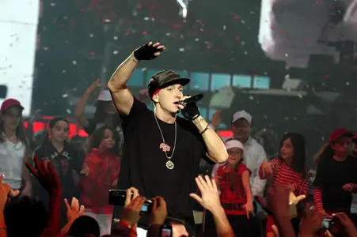
Эминем выступает на церемонии вручения премии MTV European Music Awards 2004 в Риме
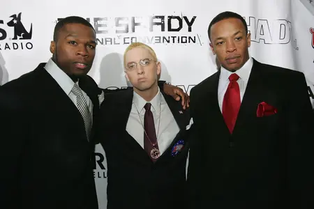
50 Cent, Эминем и Dr. Dre прибывают на Shady National Convention, чтобы запустить Shade 45, новую спутниковую радиостанцию, в Roseland Ballroom 28 октября 2004 года в Нью-Йорке
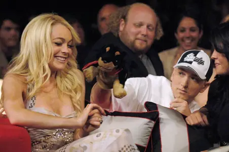
Линдси Лохан, Эминем и его версия комикса «Триумф оскорбительной собаки» на церемонии вручения наград MTV Movie Awards 2005 в Shrine Auditorium в Лос-Анджелесе
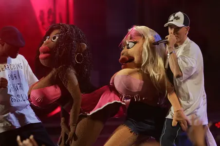
Эминем и его друзья выступают на церемонии вручения наград MTV Movie Awards 2005 в Shrine Auditorium 4 июня 2005 года в Лос-Анджелесе
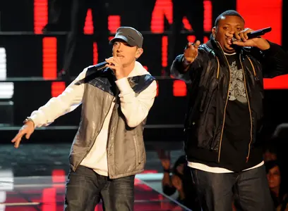
Эминем и мистер Портер исполняют песню «We Made You» из альбома Relapse на сцене во время церемонии вручения наград MTV Movie Awards 2009, которая состоялась 31 мая 2009 года в Гибсон-Амфитеатре в Юниверсал-Сити, Калифорния
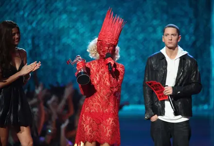
Леди Гага получает награду в номинации «Лучший новый исполнитель» от Эминема на церемонии вручения наград MTV Video Music Awards 2009 в Radio City Music Hall 13 сентября 2009 года
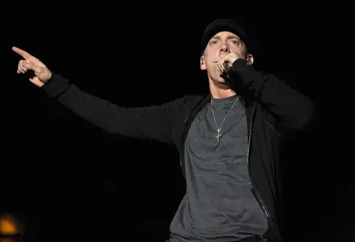
Эминем выступает на музыкальном фестивале Epicenter 2010 в Auto Club Speedway 25 сентября 2010 года в Фонтане, Калифорния
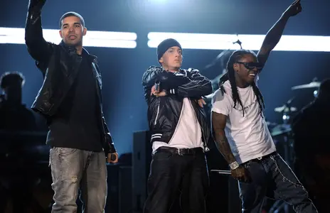
Дрейк, Эминем и Лил Уэйн выступают на сцене во время 52-й ежегодной церемонии вручения премии «Грэмми», которая состоялась 31 января 2010 года в Стейплс-центре в Лос-Анджелесе
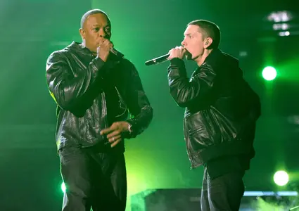
Dr. Dre и Эминем выступают на сцене во время 53-й ежегодной церемонии вручения премии «Грэмми», которая состоялась 13 февраля 2011 года в Стейплс-центре в Лос-Анджелесе
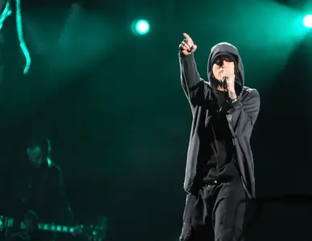
Эминем выступает на третий день музыкального фестиваля Coachella 2012 в Empire Polo Club 15 апреля 2012 года в Индио, Калифорния
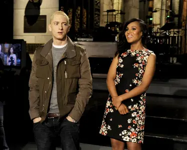
Музыкальный гость Эминем и ведущая Керри Вашингтон появились в Saturday Night Live 2 ноября 2013 года
Интересный факт
Эминем стал первым рэпером, получившим премию «Оскар» за песню «Lose Yourself» (фильм «8 Mile»).